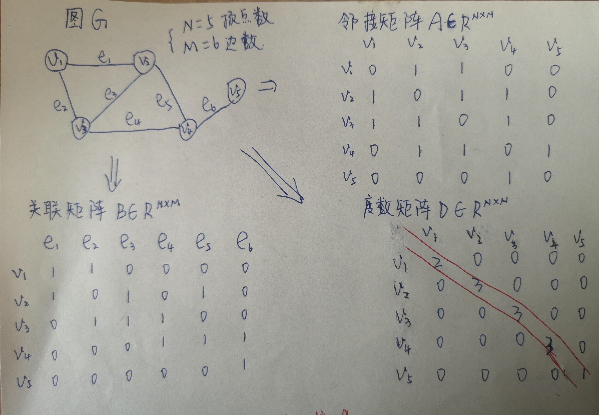

1. 从 CNN 到 GNN
现实生活中，很多 graph（图数据）是从非欧氏空间中生成的，graph 不再只是从欧氏空间中生成的规则的栅格结构。
CNN --> 用来提取欧氏空间数据的特征，它针对规则的 2D 栅格结构的 image（传统数据，具有规则的空间结构），其像素点的排列顺序有明显的上下左右的位置关系。
CNN 中卷积核的形状是固定的，其卷积操作具有序列有序性和维数不变性的限制。
GCN --> 针对不规则的 graph（图数据，非矩阵结构数据）， graph 的节点之间无空间上的位置关系，中心节点的邻域节点是不确定的，且邻域节点没有顺序。因此传统的卷积核就无法适应图卷积。
1.1. graph 的定义
在数学中，图是由顶点（Vertex）和连接顶点的边（Edge）构成的。顶点表示研究的对象，边表示两个对象之间的特定关系。
图表示顶点和边的集合，记为 G=(V,E) ，其中，V是顶点集合，E 是边集合。 设图 G 的顶点数为 N，边数为 M。 一条连接顶点 vi,vj∈V 的边记为(vi,vj)或者eij 。
邻居和度 如果存在一条边连接顶点 vi 和 vj ，则称 vj 是 vi 的邻居，反之亦然。 vi 的所有邻居为集合 N(vi)，即:
N(vi)={vj∣∃eij∈E or eji∈E}
以 vi为端点的边的数目称为 vi 的度（Degree），记为 deg(vi), deg(vi)=∣N(vi)∣.
邻接矩阵 & 关联矩阵 & 度矩阵 & 拉普拉斯矩阵
图 G=(V,E)， 邻接矩阵 A 描述图中顶点之间的关系，A∈RN×N,其定义为：
Aij={10if (vi,vj)⊆Eelse
关联矩阵 B 描述节点与边之间的关联，B∈RN×M，其定义为：
Bij={10if vi与ej相连else
度矩阵 D 是一个对角矩阵，D∈RN×N，其定义为：
Dij={deg(vi)0if i=jelse
示例：

拉普拉斯矩阵 L 用来表示 graph 的结构信息，L=D−A∈RN×N，定义为：
Lij=⎩⎨⎧deg(vi)−10if i=jif eij∈Eotherwise
–> 由此定义可知：拉普拉斯矩阵是一个实对称矩阵！！！
–> 拉普拉斯矩阵用来表示 graph 的结构信息，目前GCN 都是将结构信息和属性信息剥离开来，能否找到一种方式融合结构信息和属性信息来表示 graph 呢？？？
归一化拉普拉斯矩阵 Lsym，对拉普拉斯矩阵的归一化操作，是通过对拉普拉斯矩阵两边乘以节点的度开方然后取逆得到，即：Lsym=D−21LD−21=D−21(D−A))D−21=In−D−21AD−21，其中每一个节点对(i,j)定义为：
Lijsym=⎩⎨⎧1−deg(vi)deg(vj)10if i=j且deg(vi)=0if i=j且vi与vj相邻otherwise
2. GNN
2.1. GCN
GCN：将卷积运算从传统 image 推广到 graph 图数据。核心思想：学习一个函数映射 f(.)，通过映射图中的节点 vi 可聚合自身特征 xi 与它的邻居特征 xj(j∈N(vi)) 来生成节点 vi 的新表示。
GCN --> 在非欧几里得结构数据中做卷积。
&图卷积神经网络与图傅里叶变换和拉普拉斯矩阵之间有什么关系？
传统卷积：
(f∗g)(t)=∫Rf(x)⋅g(t−x)dx
–> 传统的卷积是针对具有规则空间结构，其像素点的排列顺序具有明确的上下左右位置关系的 image 的.
–> 针对空间结构不规则，其节点之间没有空间上的位置关系的 graph，如何实现卷积操作呢？
–> 根据时域卷积定理：时域内的卷积对应频域内的乘积。
–> 那么** 只需定义 graph 上的傅里叶变换，即可定义 graph 上的卷积**，即：
f∗g=F−1{F{f}⋅F{g}}
–> 图傅里叶变换是离散的，类似于离散傅里叶变换
–> 离散傅里叶正变换：
F(w)=t=1∑nf(t)⋅e−in2πwt
n：傅里叶变换的点数；w：傅里叶变换的第 k 个频谱。
–> ** 离散正变换的本质是：求线性组合的系数**，由原函数和基函数的共轭的内积求得。
–> 离散傅里叶反变换：
f(t)=n1w=1∑nF(w)⋅ein2πwt
F(w)：分量的振幅；w：频率；ein2πwt：基
–> ** 离散傅里叶反变换的本质：把任意一个函数表示成了若干个正交基函数的线性组合**
–> 对应 graph 上的信号 x=[x1,x2,⋯,xn]T∈Rn，如果要进行傅里叶变换，那么：
** 我们需要找到一组正交基，通过这组正交基的线性组合来表达x∈Rn**
–> ** 图傅里叶变换使用拉普拉斯矩阵的特征向量作为图傅里叶变换的正交基**
–> ** 为什么拉普拉斯矩阵的特征向量能作为图傅里叶变换的正交基？**
假设图的拉普拉斯矩阵为 L∈RN×N，L=D−A 是一个实对称矩阵，因为** 实对称矩阵都可以被正交对角化**，所以对 L 进行特征分解（谱分解），将拉普拉斯矩阵分解为由其特征值和特征向量表示的矩阵之积，即：L=VΛVT，V=[v1,v2,⋯,vN] 表示 L 的 N 个特征向量， Λ=diag[λ1,λ2,⋯,λN] 表示 L 的 N 个特征值，而 λk 则表示第 k 个特征向量对应的特征值。
** 对称矩阵性质： n 阶对称矩阵一定有 n 个线性无关的特征向量**
** 矩阵论：n 维线性空间中的 n 个线性无关的向量都可以构成线性空间中的一组基**，基可表示 n 维线性空间中的所有向量。
–> ** 拉普拉斯矩阵的 n 个特征向量是线性无关的，它们是 n 维空间中的一组基**
** 对称矩阵性质：对称矩阵的不同特征值对应的特征向量相互正交，这些正交的特征向量构成的矩阵为正交矩阵**
–> VVT=I, L=VΛVT=VΛV−1，VT=V−1 <-- 正交矩阵
–>** 拉普拉斯矩阵特征分解后的特征向量不但是 n 维空间中的一组基，而且还是正交的（相乘为0）**
即 ** 拉普拉斯矩阵的 n 个特征向量是 n 维空间中的一组标准正交基**
因此，拉普拉斯矩阵的特征向量可以作为图傅里叶变换的正交基，满足充分条件。那么，正交基那么多，为什么 GCN 采用拉普拉斯矩阵的特征向量呢？也就是采用拉普拉斯矩阵的特征向量作为图傅里叶变换的正交基的必要性体现在哪里呢？
暂时还没能彻底搞清楚，下面是我认为的原因：
拉普拉斯矩阵的定义来源于拉普拉斯算子。拉普拉斯算子是 n 维欧氏空间中的一个二阶微分算子，定义为梯度的散度，即：△f=∑i=1nσxi2σ2f，将拉普拉斯算子推广到离散的二维图像空间，即变成了边缘检测算子 --> 将拉普拉斯算子表示成模板的形式：
⎣⎡0101−41010⎦⎤
–> 由图可知，** 拉普拉斯算子描述了中心像素与局部上下左右四个邻居像素的差异 --> 被用来当作 image 上的边缘检测算子。**
–> ** 将其推广到 graph 上，也用拉普拉斯算子来描述中心节点与邻居节点之间的信号的差异**
–> 拉普拉斯矩阵其实就是离散化拉普拉斯算子的一种表示方式，也就是说拉普拉斯矩阵是图上的拉普拉斯算子。
–> 因为拉普拉斯矩阵是图上的拉普拉斯算子，能描述中心节点与邻居节点之间的信号差异，所以将拉普拉斯矩阵应用到图卷积中。
–> 综上，图傅里叶变换使用拉普拉斯矩阵的特征向量作为图傅里叶变换的基函数，即：V=(v1,v2,⋯,vn)–> 傅里叶基
图傅里叶变换：x~k表示x在第k个傅里叶基上的傅里叶系数；Vk表示第k个傅里叶基。公式如下：
x~k=i=1∑NVkiTxi=<Vk,x>
图傅里叶逆变换：Vki表示傅里叶基； x~i表示傅里叶系数。公式如下：
xk=i=1∑NVki⋅x~i
图信号的总变差 --> 刻画图信号的整体平滑度
TV(x)=xTLx=xT(VΛVT)x=(Vx~)T(VΛVT)(Vx~)=x~TVTVΛVTVx~=x~TΛx~=k∑Nλkx~k2
–> λk：特征值，等价于频率；x~k：傅里叶系数，等价于幅值。
GCN 的两种理解方式（从空域和频域两个不同的角度来理解图卷积）：
1）Spectral-based GCN --> 从图信号处理角度引入滤波器来定义卷积。
2）Spatial-based GIN --> 从邻域聚合特征信息。利用边的信息对节点信息进行聚合从而生成新的节点表示。
2.1.1. Spectral-based Graph Convolutional Networks
2.1.2. Spatial-based Graph Convolutional Networks
邻居节点度数越小，分配到的权重越大。
空间意义为：
每个节点通过边对边发送相同量的信息，边越多的节点，每条边发送出去的信息量就越小。